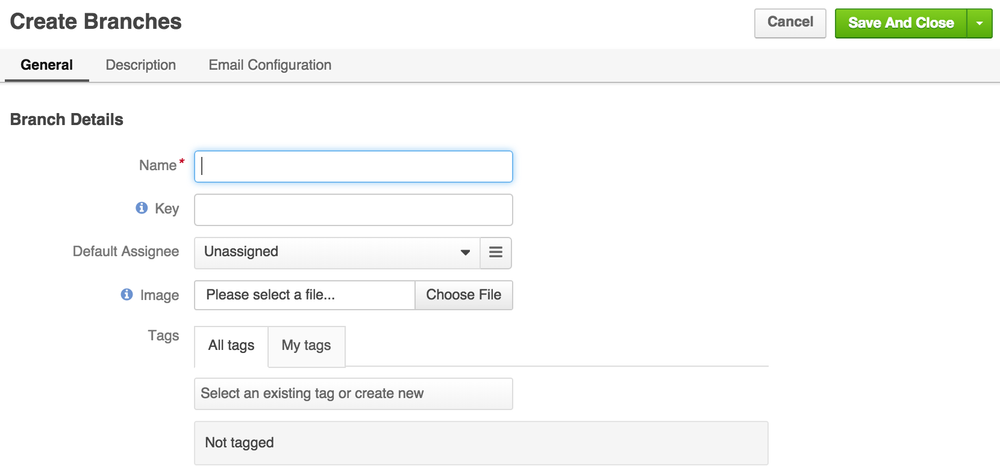

Branches
When a customer of any web service supported by DiamanteDesk needs to report an issue or submit a request to the help desk team, a ticket is created. Each ticket is assigned with a unique ID and is sorted according to the branch where it is created or is added to.
Creating separate branches in DiamanteDesk allows grouping tickets according to the requests of specific users, locations, issues or according to the Channel of the ticket. Branch logic helps organizing tickets according to a certain category and helps finding them quickly. Reliable customer service implies quick problem solving, so we provide our Clients with a user-friendly tool making it run like clockwork.
This article answers the following questions:
Note: When the ticket is automatically created from the email received at the the support email address, it is created at the branch which is configured as a default one. To learn more about it, please see the Email Processing section.
To see the list of all available branches, select the Branches tab at the navigation panel.
Branch Filters
All branches can be filtered according to the Branch Name or Branch Key.
Branch name and Branch Key filters are set to All values by default. To filter the branches according to a certain branch name or key, click the down arrow in the corresponding field and enter the required name or key. To refresh the results, click Refresh. To clear all filters, click Reset.
To learn more about filtering in DiamanteDesk, follow this link.
Create a New Branch
Click Create Branch at the right top corner of the Branches screen.
The Create Branches screen opens. 
Provide the necessary information in each field. Not all fields are required, but the more data you provide, the easier it is to distribute tickets into the corresponding branches and find them when they are needed:
| Field | Description |
|---|---|
| Name | Required. Provide a descriptive name of a new branch. |
| Key | Leave a Key field empty as it is automatically filled by the system. Branch key is generated from the branch name and it should be unique across the system. Branch key must contain only letters. Minimum length is 2 letters. If Branch name consists of more than one word, the system takes the first character of every word and converts them to upper case (for example, Green Daisy - GD, Diamante Desk - DD, etc.). If branch name consists of a single word, branch key is generated from the first 2-4 characters in the upper case (for example, Eltrino - ELTR, bbq - BBQ, etc.). |
| Default Assignee | To select the Assignee, click Unassigned. A Search Panel opens. Next, the following two options are available: you can either start entering the name of the person to be assigned and the system will provide hints with matching results or you can click a list image to open a list of all available assignees. Note: If you have selected a wrong assignee, click the X button next to the name of the selected assignee. |
| Image | Add an image that will serve as a branch logo. Click Choose file and select a required image from your local machine. |
| Tags | You can tag your branch. Follow this link to learn more about branch tagging. |
Provide the description of the branch in the Description field.

Edit a Branch
- Navigate to the Branches screen.
- Select the branch that shall be edited from the list of available branches. The selected Branch screen opens.
- Click Edit at the right top corner of the screen:
- Perform the necassary changes/updates.
- Click Save or Save and Close for the corresponding action.
Delete a Branch
Three options of branch deleting are available in DiamanteDesk:
Deleting a Single Branch
When attempting to delete a single branch in DiamanteDesk, keep in mind that ALL its tickets are going to be deleted as well.
- Navigate to the Branches screen.
- Select the branch that shall be deleted from the list. The selected Branch screen opens.
- Click Delete at the right top corner of the screen: Note: When attempting to delete a single branch in DiamanteDesk, keep in mind that ALL its tickets are going to be deleted as well.
- The following confirmation message appears: SCREEN
- To delete a branch but keep all the tickets in the system, select a corresponding checkbox in the warning message and choose a new branch where all the tickets shall be moved.
Note: If a branch is configured as default for Email Processing, it cannot be deleted and the following message is displayed at the top of the Branch screen:

Branch Deleting Mass Action
Multiple branches can be deleted via mass action functionality in DiamanteDesk. Perform the folllowing steps in order to delete several branches at once:
- Navigate to the Branches screen.
- Select several branches that shall be deleted from the list of available branches.
- Click the Mass Actions button and select the Delete Branches option as shown on the picture below.
- The Delete Confirmation message opens.
- Click Delete to proceed or Cancel to return to the Branches screen. Branch cannot be deleted via mass action if it has any tickets. Only the branches without any tickets can be deleted during branch deleting mass action.
Deleting Branches through API
Branches can also be deleted via the API call. The DiamanteDesk RESTful API guide is available here.
Please note that a branch cannot be deleted via API request if it has any tickets. Only the branches without any tickets can be deleted via API request.